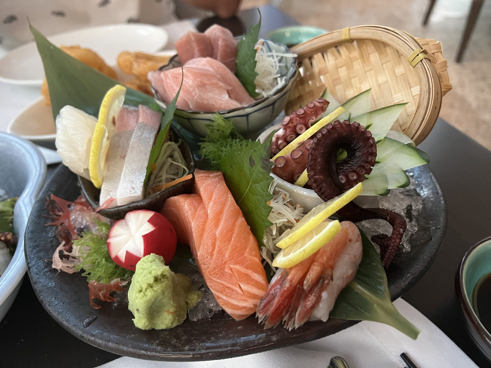
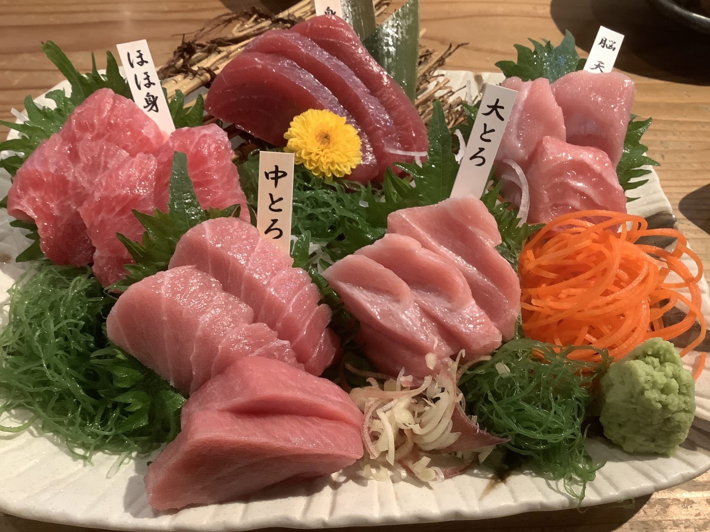
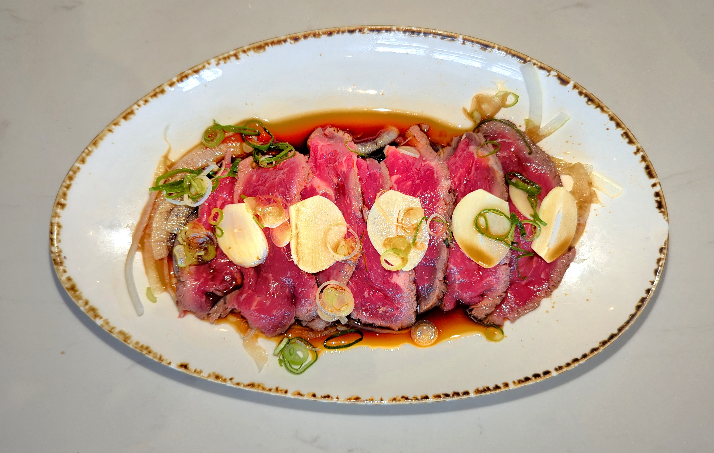
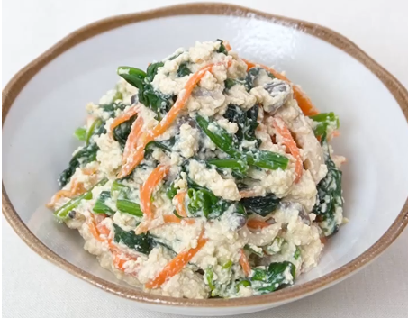
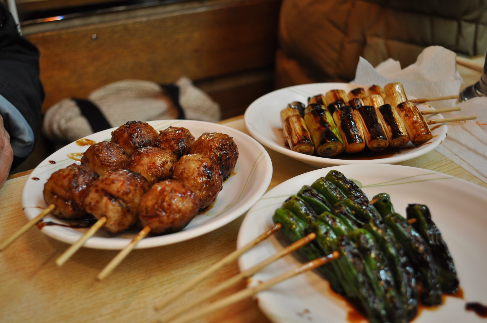

MENU
白根の隠れ家で味わう、
手づくりの一品料理
毎日市場へ仕入れに向かう刺身、新潟の郷土料理「のっぺ」など、すべて手づくりの一品料理をご用意しています。一人飲みのお供にも、宴会の一皿にもどうぞ。
刺身・活き造り
毎日仕入れ毎日市場へ仕入れに向かっているとのお声をいただく、たべどころの刺身。盛り合わせはもちろん、宴会では活き造りが並んだという例もあります。
-
刺身盛り合わせ
刺身盛り合わせ
毎日市場へ仕入れに行っているとのお声あり。鮮度の良さが評判です。
-
活き造り

活き造りのお刺身
宴会でご提供いただいた例があります。にぎやかな席を彩る一皿です。
-
馬刺し赤身

馬刺し赤身
生姜味噌だれ風のタレで、にんにくは控えめ。馬刺し本来の旨味が際立つと評判です。
一品・小鉢
手づくり出汁巻き玉子やのっぺなど、すべて手づくりの一品料理。お酒のお供にも、ご飯のお供にもどうぞ。
-
魚河岸セット

魚河岸セット
店主おまかせのおつまみ盛り合わせ。どれも手づくりでしっかりした味わいと評判です。
※口コミでご紹介いただいた一例(1,500円)です。現在の内容・価格とは異なる場合があります。
-
出汁巻き玉子
出汁巻き玉子
甘めの味付けで、ほっとする一品と評判です。
-
和風おこげの野菜あんかけ
和風おこげの野菜あんかけ
油で揚げたお焦げ風おにぎりに、ごま油の香る餡がたっぷり。食べごたえがあると評判です。
※口コミでご紹介いただいた一例(600円)です。現在の内容・価格とは異なる場合があります。
-
のっぺ
のっぺ
新潟の郷土料理。ホタテの出汁がきいた上品な味わいで、「ピカイチ」との声もいただいています。
-
鶏の竜田揚げ

鶏の竜田揚げ
家族でのご来店でも好評だったというお声をいただいています。
-
ジャンボ焼鳥
ジャンボ焼鳥
食べごたえのあるボリュームと評判です。
-
おにぎり
おにぎり
ふんわりとした握り心地とご好評をいただいています。
-
生野菜
生野菜
懇親会では、たっぷりの生野菜が並んだとのお声もいただいています。
お飲み物
お酒各種生ビールをはじめ、お酒各種をご用意しています。
-
お酒各種
生ビールなど お酒各種
銘柄や価格の詳細情報はございませんが、生ビールをはじめお酒各種をご用意しています。
一人飲みから宴会まで
8人ほどの懇親会でご利用いただいた例があり、「部屋も広く」というお声もいただいています。一人でふらりと立ち寄るのはもちろん、気の置けない仲間との宴会まで、広めのお部屋でゆったりとお過ごしいただけます。
宴会・お食事のご相談は、アクセス・お問い合わせページをご覧ください。
アクセス・お問い合わせを見る